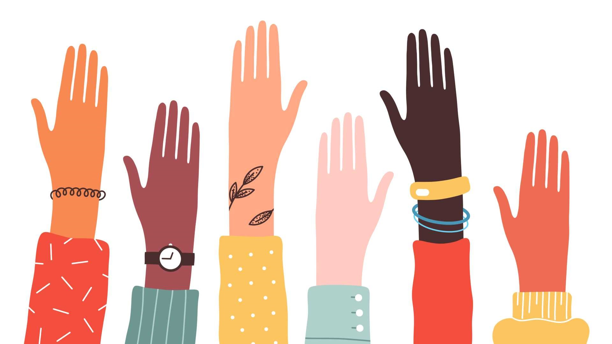

CATEGORIES
The Loneliness Epidemic: Understanding and Addressing Social Isolation
Explore the rising issue of loneliness in modern society and its far-reaching impacts on mental health
and well-being. From the elderly to Gen Z, delve into the root causes of social isolation and discover
strategies for fostering connection and community.
Mystic Falls
SOCIETY
February 5, 2024
Navigating the Digital Age: Balancing Connectivity and Privacy in a Hyperconnected World
Examine the complex interplay between technology, connectivity, and privacy in today's digital age.
From social media to surveillance, explore the challenges and opportunities of navigating the virtual
landscape while safeguarding personal data and digital rights.
Daily Guide
SOCIETY
January 5, 2024

The Power of Allyship: Building Inclusive Communities and Challenging Systemic Oppression
Dive into the concept of allyship and its crucial role in creating inclusive and equitable societies.
From amplifying marginalized voices to challenging systemic oppression, discover how individuals and
communities can work together to effect meaningful change.
Golden Day
SOCIETY
December 5, 2023

Exploring Generational Divides: Bridging the Gap Between Boomers, Millennials, and Gen Z
Unpack the generational differences and tensions that shape contemporary society. From economic
disparities to cultural shifts, examine the factors driving intergenerational divides and explore
strategies for fostering understanding and collaboration across age groups.
Range
SOCIETY
November 5, 2023
Beyond Borders: Navigating the Complexities of Immigration and Refugee Resettlement
Delve into the complexities of immigration and refugee resettlement in an increasingly globalized
world. From policy debates to personal narratives, explore the challenges and triumphs of newcomers as
they navigate unfamiliar landscapes and seek to build new lives.
Mystic Falls
SOCIETY
October 5, 2023

Reimagining Urban Spaces: Designing Cities for Equity, Sustainability, and Livability
Explore the evolving role of urban design in shaping inclusive, sustainable, and livable cities. From
green spaces to affordable housing, examine innovative approaches to urban planning that prioritize
equity, environmental stewardship, and quality of life for all residents.
Jermaine Cole
SOCIETY
October 5, 2023